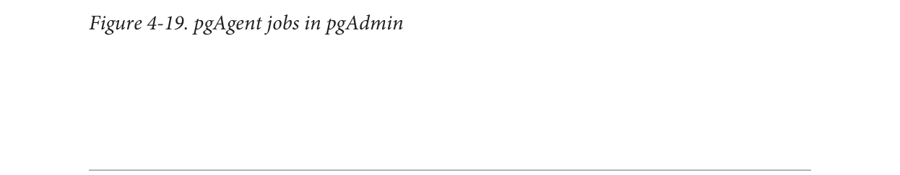

Nếu bạn chọn chạy các công việc theo lô, cú pháp phải cụ thể cho hệ điều hành đang chạy công việc. Ví dụ, nếu pgAgent của bạn đang chạy trên Windows, các công việc theo lô của bạn nên có các lệnh DOS hợp lệ. Nếu bạn đang trên Linux, các công việc theo lô của bạn nên có các lệnh shell hoặc Bash hợp lệ.
Các bước được thực hiện theo thứ tự chữ cái, và bạn có thể quyết định loại hành động nào bạn muốn thực hiện khi thành công hoặc thất bại của từng bước. Bạn có tùy chọn vô hiệu hóa các bước mà nên giữ nguyên nhưng bạn không muốn xóa vì bạn có thể kích hoạt lại chúng sau này.
Khi bạn đã chuẩn bị các bước, hãy tiến hành thiết lập một lịch trình để chạy chúng. Bạn có thể thiết lập các lịch trình phức tạp với màn hình lập lịch. Bạn thậm chí có thể thiết lập nhiều lịch trình.
Nếu bạn đã cài đặt pgAgent trên nhiều máy chủ và có tất cả chúng đều trỏ đến cùng một cơ sở dữ liệu pgAgent, tất cả các tác nhân này theo mặc định sẽ thực hiện tất cả các công việc.
Nếu bạn muốn chạy công việc chỉ trên một máy cụ thể, hãy điền vào trường tác nhân máy chủ khi tạo công việc. Các tác nhân chạy trên các máy chủ khác sẽ bỏ qua công việc nếu nó không khớp với tên máy chủ của chúng.
pgAgent bao gồm hai phần: dữ liệu định nghĩa các công việc và ghi lại công việc. Thông tin ghi lại nằm trong lược đồ pgAgent, thường là trong cơ sở dữ liệu postgres; các tác nhân công việc truy vấn các công việc để tìm công việc tiếp theo để chạy và sau đó chèn thông tin ghi lại liên quan vào cơ sở dữ liệu. Thông thường, cả máy chủ PostgreSQL giữ dữ liệu và tác nhân công việc thực hiện các công việc đều nằm trên cùng một máy chủ, nhưng điều này không bắt buộc. Thêm vào đó, một máy chủ PostgreSQL duy nhất có thể phục vụ nhiều tác nhân công việc nằm trên các máy chủ khác nhau.
Một công việc đã được hình thành đầy đủ được hiển thị trong Hình 4-19.

Lập lịch công việc với pgAgent|75